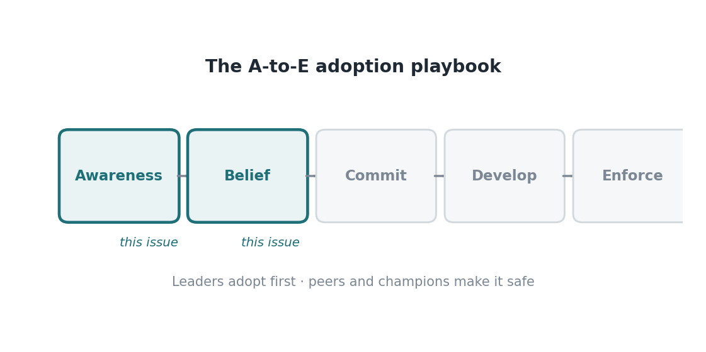

Edisi 11 — Awareness & Belief: bagaimana perubahan sebenarnya dimulai
Di balik kurva adopsi ada fakta sosial yang sering diabaikan budget: orang mengadopsi apa yang diadopsi rekan yang mereka percaya, bukan apa yang diumumkan lewat memo. Datanya konsisten mendukung ini — tim dengan trust rendah sekitar 1,5x lebih cemas soal AI, dan karyawan di organisasi berkinerja tinggi kira-kira 3x lebih mungkin bilang leader mereka benar-benar memiliki agenda ini. Trust dan kepemilikan leadership yang keliatan, bukan volume informasi, yang mengubah awareness jadi belief.
Model adopsi A-ke-E membuat tahapannya eksplisit: Awareness, lalu Belief, lalu Commit, Develop, dan Enforce. Edisi ini ada di dua tahap pertama. Awareness itu murah diciptakan dan gampang diukur — tapi korelasinya lemah sama pemakaian nyata. Belief itu indikator awal yang beneran memprediksi adopsi, dan dia diciptakan secara sosial: leader mencontohkan, champion mendemonstrasikan, rekan menyaksikan keberhasilan yang terasa aman. Perlakukan belief sebagai metrik, bukan mood, dan kamu bisa mengelolanya.

Urutan yang didukung bukti itu spesifik: leader adopsi duluan (buat menandakan rasa aman dan kepemilikan), lalu champion mendemonstrasikan (buat memberi bukti yang relatable), lalu rekan-rekan ikut (karena sekarang terasa aman). Mandat melewatkan bagian tengah dan gagal, karena mandat menciptakan kepatuhan, bukan belief — dan kepatuhan tanpa belief menghasilkan non-pemakaian diam-diam yang muncul sebagai belanja yang sia-sia. Jalur sosial ini lebih lambat mulainya tapi jauh lebih tahan lama begitu sudah kena.
Buat ROI, ini artinya belanja awal dengan leverage tertinggi bukan lebih banyak lisensi atau modul training; itu adalah mengidentifikasi dan memberdayakan champion, dan bikin leader keliatan memakai tool-nya. Ini intervensi berbiaya rendah dan bersinyal tinggi. Satu champion yang kredibel bisa menggerakkan belief sebuah tim lebih dari budget training yang besar, karena belief berpindah lewat relasi yang dipercaya, bukan lewat volume konten.
Pengukuran seharusnya mengikuti modelnya. Lacak belief secara langsung — pulse question soal trust, kegunaan yang dirasakan, dan rasa aman-untuk-mencoba — sebagai indikator awal, dan lihat itu memprediksi metrik hasil yang datang belakangan (kedalaman adopsi, lalu cycle time dan kualitas). Kalau awareness-nya tinggi tapi belief-nya datar, kamu punya masalah trust dan bukti sosial, bukan masalah informasi, dan menuangkan lebih banyak komunikasi nggak bakal memperbaikinya. Diagnosisnya bilang ke kamu tuas mana yang harus ditarik.
Bacaan strategisnya: belief itu aset yang kamu bangun dengan sengaja lewat orang, dan itu gerbang yang harus dilewati setiap return di hilir. Organisasi yang berinvestasi di mekanika sosial belief — leader-duluan, champion-berikutnya — mengkonversi belanja teknologi mereka; yang mengandalkan pengumuman dan mandat malah membuatnya terdampar. Perbedaan biayanya kecil; perbedaan hasilnya adalah seluruh program.
Satu pola lagi yang perlu diperhatikan buat yang lagi planning: belief harus diraih ulang di tiap tool baru, tapi jadi makin murah tiap kali. Agent pertama yang diadopsi sebuah tim itu paling berat — belum ada yang lihat itu berhasil di sini, jadi usaha champion dan leader-nya tinggi. Begitu sebuah tim sudah melewati satu adopsi yang berhasil, trust-nya jadi tergeneralisasi: orang punya template "tool baru, coba, kemungkinan besar aman," dan adopsi kedua dan ketiga bergerak lebih cepat dengan usaha lebih sedikit. Itu alasan buat memilih use case pertama dengan hati-hati dan berinvestasi besar bikin itu berhasil secara keliatan. Kamu nggak cuma menyelesaikan satu alur kerja; kamu lagi membangun otot adopsi yang menurunkan biaya setiap adopsi setelahnya.
Teruskan ini ke sesama leader-mu: belief adalah indikator awal yang bisa diukur, dan champion menggerakkannya lebih murah daripada mandat apa pun — mari kita danai jalur sosialnya.
Sumber
- Model A-ke-E; leader-duluan, champion-berikutnya; trust rendah ~1,5x cemas; ~3x kepemilikan leader di performer tinggi — McKinsey (7 Agustus 2026).